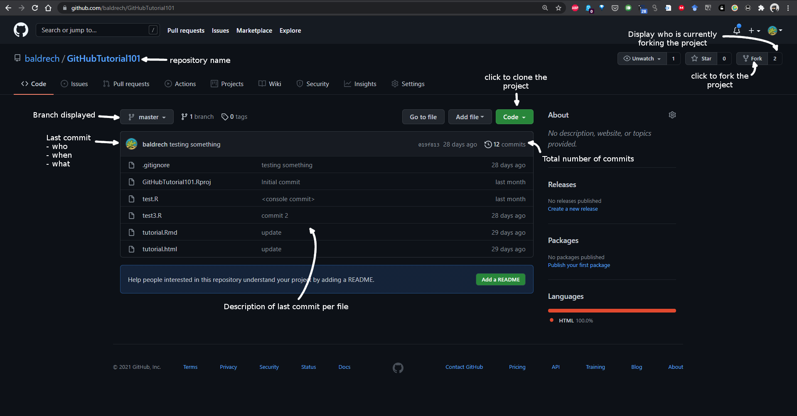
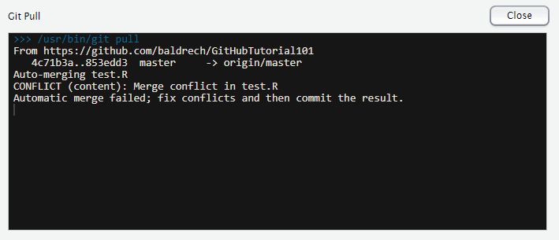
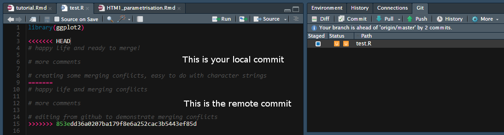
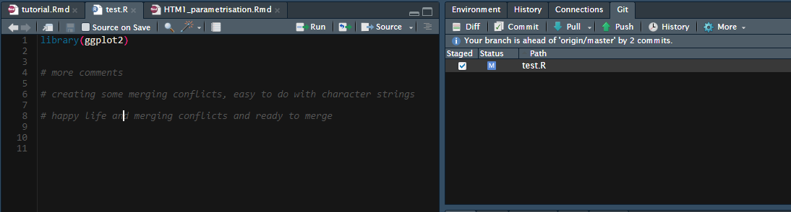

install.packages(c("usethis","gitcreds"))What is Git? Please don’t scare me, no more
Requirements:
Have git installed (http://git-scm.com/downloads)
Have usethis and gitcreds R package installed
Why using GitHub?
Git is a software that track changes in your files.
GitHub is the online version which allows you to share your files and collaborate with others. It can also be used as an online backup.
In summary, GitHub allows you to track your progress wihtout losing previous versions of your work, independently of what machine you are working on.
Git is used with shell commands, meaning that there is no graphical interface for the software. Rstudio implements some Git functions in its interface but only the simplest ones actually manage to keep up with what’s happening with Git. Therefore this tutorial mainly uses the console and terminal to guide you through Git functions. No previous knowledge is necessary to follow the tutorial. If there is no “terminal” tab in your RStudio, you can open one with Tools>Terminal>New Terminal or Shift+Alt+R
Installing Git
Check if Git is installed on your machine and/or if Rstudio knows where Git is. (use the terminal)
which gitOn windows, one might needs to give the path of Git to Rstudio in Tools>Global Options>Git/SVN. Enter the path where Git is installed in the “Git executable” cell (usually C:/Program Files/Git/bin/git.exe).
Since Git allows for collaboration, one needs to setup an identifiant and email address first, so changes made to any file can be tracked to its human origin.
usethis::edit_git_config()Edit the opened script with your informations.
Initialize your first Git repository
In Rstudio, a Git repository is based on a R project. If you are not using R projects yet, time to get onto it!
Let’s start by creating a new project using the “new directory>new project” option. There a cell asking you if you want to make it a Git repository. That’s one way to do it, below is another way using the console that also allows converting an existing R project into a Git repository.
In your new project, there are no Git tab next to the “environment” and “history” tab yet.
Use the below command to initialise the Git repository
usethis::use_git()Now we have a Git tab! (might need to restart Rstudio)
On the Git tab, the “clock” button is the history of the project (all the commits done). For now there is just one, the initial commit.
Commiting your changes
Let’s create new file
file.edit("test.R")Click on the “Commit” button in the Git tab. It opens a “Commit” window that shows you all the files that differ from the previous commit made on Git. Yellow symbols means that the files are not tracked and Git is waiting to know if they should be. Click on your recently created file and it becomes green. It means that Git is going to add the file for the first time to your tracked changes. Write a commit message and commit.
Now add something in your new file and save it. Back in the “Commit” window, the script is in blue, meaning there are differences between the last commit saved by Git and your last save.
Commit the changes and check the history of your commits. That’s the track change function of Git.
Connecting GitHub and going online
First step is to use your favorite browser to go to https://github.com/ and create a GitHub account.
The first thing to know about GitHub is that you are going to use your password only to connect to your account online, everything else, namely using Git functions is done using personal access tokens (PAT). One can also use SSH to connect with GitHub but if you know what SSH is, you also know how to set it up yourself (probably).
We are going to use R to create a PAT and link our local Git repository to GitHub.
usethis::create_github_token()This sends you in your GitHub account where you can create a PAT and define its function. Think of the PAT as a strong password with editable privileges. Once you create your PAT store it somewhere as you are never going to see it again on GitHub.
Now to connect to GitHub, the easiest is to store your credentials with Rstudio.
gitcreds::gitcreds_set()You need to enter your PAT in the password slot. The password used to connect to your GitHub account won’t work.
Now you will be able to host your R projects into GitHub repositories!
Note on using a linux server
Rstudio installed on linux server, such as when using a nectar instance, do not have a proper way to store credentials. The default behavior is limited to a cache with a lifespan of 900 seconds. To store your PAT, you need the credential R package
credentials::set_github_pat()Paste your token when prompted.
To check your GitHub account info and if the token is well saved:
usethis::git_sitrep()Other solutions to store your PAT that didn’t work for me:
git config --global credential.helper storeThen commit once using your username and PAT when prompted.
Another solution is to set your PAT in your Renviron.r
usethis::edit_r_environ()Then add
#GITHUB_PAT=40charactersPAT
#Do not forget to add an empty line at the end then, restart the R session to take changes into account.
Connecting from Rstudio
For when you already have a project that you want to put on GitHub.
You need to have Git set up in your project with use_git(), then use
usethis::use_github()Connecting from GitHub
When you create a new project in Rstudio, you can select the version control option and enter the GitHub URL to link it to your project. The repository’s URL is found on its main page by clicking on the green “Code” button.

What now?
Now that R and GitHub are linked we can start collaborating!
Even if you do not wish to collaborate, you will still have to use Git to talk between your local projects and the ones on GitHub so this applies to you too! Git has its own lexicon, below is a list of the main basic commands we can use with Git.
Push
It means you send (push) your changes towards something else. The basic case is that you have changed some stuff locally and you push it online in your own repository. You need to commit your changes first. Files that you never commited to Git can stay as they are.
One can use the green arrow in the Git tab or use
git pushPull
It means that you grab some code to put it where you initiated the pull. In our case we are getting the code from GitHub into our local Rstudio. You cannot push towards a repository if you have not pulled any changes with your code first.
One can use the blue arrow in the Git tab or use
git pullWhen commits are pushed from a different source into the GitHub repository (e.g. from a collaborator), you are going to have first to pull the updated code locally before being able to push your own commits to the GitHub repository. Git automatically merges commits that are pulled locally but sometimes there might be some merging conflicts needing to be resolved by the user.
This is the message telling you there are merges to solve manually 
The conflict is going to be surrounded by less (<) and greater (>) symbols. The firs part called HEAD is your local commit whereas the second part, separated by the equal (=) symbol is the remote commit. There you need to solve the problem and delete the symbols.

Below is the resolved conflict which is ready to be commited. You will note that the conflict is notified by a orange U in the git window which become a blue M once the conflict is resolved.

Branches and why do it?
When you initialise a Git repository, one branch called “master” is created. If you clone your repo online with github, the online branch is also going to be called “master”. That’s the default.
Why use more than one branch? Let’s say your code works perfectly but you want to add/try something new. One way could be to stay on the same branch and keep commiting. If nothing works you can restore a previous stage of your code but then you will lose all your recent work. A new branch is going to be a bifurcation in your code which allows you to work in parallel with different version of your code. You can create a “dev” branch, try some stuff until it works, and when you are happy about the changes you can merge your “dev” branch into “master” to get only one master branch with all your changes.
You can also have different projects using the same base code (a model for example) and have different branches depending on how you are using the code. One branch can be a model with an additional component such as pressure/depth/temperature, or even have three branches, one for each component.
View all the branchs in the repository:
git branchCreate a new branch. When creating a new branch, you are creating a copy of the branch you are on.
git branch branchNameBut we are still working on the “master” branch at the moment, let’s move to the new branch
git checkout branchNameThe terminal says: “switch to branch ‘branchName’
What if I don’t like this branch anymore? Need to leave the branch first
git checkout master
git branch -d branchNamePractical: edit something in a new branch then come back to master -> the changes are not there!
Note: Rstudio buttons have a hard time following what we are doing, it is better to use the console…
Short cut to create a new branch and switch to it:
git checkout -b testNow we want the changes we made in the new branch to be integrated into our master branch. This is called merging. To do so, we need to be in the branch receiving the changes. Git works like this, it is the same when collaborating. We never push changes towards someone, instead we ask them to pull our changes into their repository.
git merge testTerminal shows what are the difference between the two branches.
We are done with the test branch now and can remove it.
What if we want to merge only some specific files from the one branch to the other? Once again, we need to be in the branch that will receive the changes then:
git checkout --patch branchName file.RThe terminal will then display all the changes between the original file and the one we want to merge, per hunk. For every hunk, you have to choose one of these options
y - stage this hunk
n - do not stage this hunk
q - quit; do not stage this hunk nor any of the remaining ones
a - stage this hunk and all later hunks in the file
d - do not stage this hunk nor any of the later hunks in the file
g - select a hunk to go to
/ - search for a hunk matching the given regex
j - leave this hunk undecided, see next undecided hunk
J - leave this hunk undecided, see next hunk
k - leave this hunk undecided, see previous undecided hunk
K - leave this hunk undecided, see previous hunk
s - split the current hunk into smaller hunks
e - manually edit the current hunk
? - print help
Staging means you accept the changes.
Everything we have done until now was local, how do we get these new branches on GitHub? If we are on a new local branch and try to push, it won’t work. We need to setup the tracking information of the branch:
git push --set-upstream origin branchNameHere origin is an alias for the URL of our GitHub repository
Check the different branches and their tracking information:
git branch -vvIf you want to delete the remote branch:
git push origin --delete branchName(We are pushing the deletion from our local repository)
Now let’s assume you want to work on a GitHub repository from a new machine that has no local repositories/branches
Check remote branches and if they have local states
git branch -rOther version with more details
git branch -v -aWith this you can see all the different branches from the repository. If you created a new R project from GitHub, only the master branch will be downloaded. To download remote branch locally:
git checkout -b branchName origin/branchNameLet’s assume now that you have been using GitHub a lot and you wish to get one branch of a repository to become its own repo. To do so, first create a new repository, then locally checkout the branch in your old repo that you want to transfer.
git push https://github.com/accountname/new-repo.git +branchToTransfer:masterIf merging conflicts appear, set up a new remote with the adress of your new repo and pull from this remote into your branch.If you get an error of different commit history, use this to pull:
git pull upstream master --allow-unrelated-historiesResolve merging issues then try the previous hunk of code again.
Getting familiar with the commits
Check the status of your changes
git statusCommitting using the console. Adds everything not commited to the staging area. Use “git status” to see the changes.
git add . Commit to Git what’s in the staging area.
git commit -m "<commit text>"Adding a file to be commited and removing it.
git add test2.R
git reset HEAD test2.RWhat is HEAD? HEAD is a pointer that shows where the last commit happened. It will get updated everytime we commit something to become your last commit (last check point).
Now, what do you do when you already have commited some stuff that, in the end, do not want committed?
To remove the last commit from git, you can simply run
git reset --hard HEAD^If you are removing multiple commits from the top, you can run
git reset --hard HEAD~2This removes the last two commits. You can increase the number to remove even more commits.
If you want to “uncommit” the commits, but keep the changes around for reworking, remove the “–hard”:
git reset HEAD^This will delete the commits from the branch, but leave the working tree around.
If you want to save the commits on a new branch name, then create the branch first before resetting.
git branch newbranchnameIf you wish to remove commits from the remote, first pull the commits locally, reset the ones you want to remove using the above commands then use the command below to update the remote
git push origin +HEADIf you want to restore deleted commits: http://gitready.com/advanced/2009/01/17/restoring-lost-commits.html (haven’t tried yet)
If you tried to pull from GitHub without commiting your local changes, you will get an error. If after commiting, git refuses to pull with the error “Fatal: Not possible to fast-forward, aborting”, do not lose hope, you can still force git to pull with this command:
git pull --rebaseIf you wish to check what has been committed locally but not pushed to GitHub yet.
For the name and authors of the different commits (assuming that you are tracking origin and on the main branch).
git log origin/main..mainFor the file detail
git diff --stat origin/main..mainForking and pull requests
Forking a repository on GitHub means that you clone someone else’s repository into your own GitHub account. Why do that instead of pulling the repository directly into your local machine and then push back your changes? If you are not an official collaborator in a GitHub repository you cannot push changes to this repository. The GitHub way of editing someone else’s repository is to first start by a fork, which allows you to get a clone of the repository and work on it without affecting the original one. To do so you need to go on whichever repository you wish to fork and click on the fork button on the top right corner.
Once you feel that your changes should be implemented into the original repository, you need to do a pull-request. Remember, you cannot push changes anywhere, it is not polite to do so. You first need to go to the repository where you wish to add some changes and ask that your own branch in your own repository by pulled into it. When you click the pull request button you will be asked to select two branches. The first one is the branch receiving the changes (usually not yours) and the second one is bringing the update. GitHub will compare both branches and assess the differences. Write a post about why your changes are beneficial to the branch and create the pull request. It may then be accepted or rejected.
Origin and Upstream
Origin and Upstream are both aliases used by Git to store repository URL. You can check them using:
git remote -vThe terminal shows you where you push and from where you pull, usually using the origin URL.
Let’s say you clone a repository from someone else on your local machine. The Origin alias is setup to an URL where you do not have the authority to push. Once that you have cloned the repository, you might start changing things and want to keep it in your own repository. First, you fork the repository into your own GitHub and then change Origin
git remote set-url origin https://github.com/baldrech/GitHubTutorial101.gitHowever, you want to be able to still track the changes of the repository your forked from. To do this, you need to add another alias called Upstream
git remote add upstream https://github.com/baldrech/GitHubTutorial101.gitNow you can pull from the first repository and push your changes into your own
To see remote and local branches with their tracking info.
git remote show originTo pull from the upstream repository (need to specify which branch we are pulling)
git pull upstream masterPush my-branch to github (another alias for a different origin) and set it to track github/my-branch
git push -u github my-branchAnd remember,
Stackoverflow is your friend
Useful links:
http://r-bio.github.io/git-installation/
https://docs.github.com/en/get-started/quickstart/set-up-git
To add somewhere
I think need to do git fetch first at least once if want to fetch a particular branch from remote
git checkout -b branchNameIt can be done with any repository, just add the remote address and fetch it first
git remote add upstream https:...
git fetch upstream
git checkout -b newBranch upstream/master